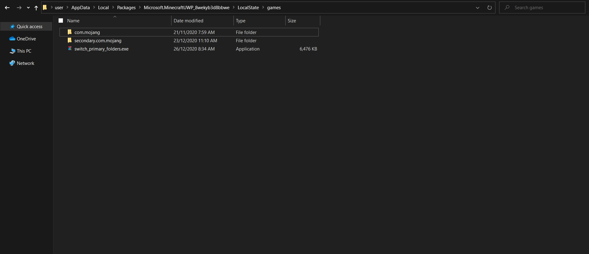

MCBE File Switcher
A simple file/profile switcher for windows 10.

To use the program create a folder called "secondary.com.mojang" in your minecraft\LocalState\games folder and put the program in the same directory
Important Messages:Because not many people will have downloaded it yet windows defender may pop up when attempting to run it. You can click "Run Anyway" and it should not pop up again.
I am NOT responsible for any loss of files caused by this program. Please make sure your back up your files before using it

Download old (.exe) version